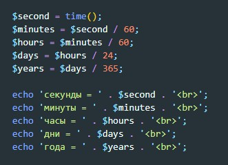
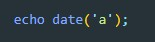
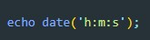
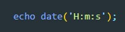
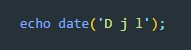
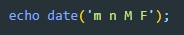
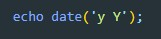
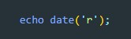

работа с датами
Функция time()
Функция возвращает количество секунд прошедших с 1970 года

date()
date() - обязательно должен получать хотя бы один параметр
передаваемые параметры:
-
a (A) - возвращает время после полудня (pm) или до (am). (если задать a - то вернет значение в нижнем регистре, если A - то в верхнем регистре)

-
h:m:s - выводит часы минуты и секунды в 12 часовом формате (можно комбинировать с 'a' что бы указать например 9 часов первой или вторйо половины дня)

-
H:m:s - выводит часы минуты и секунды в 24 часовом формате

-
D j l - D - выведет сокращенный вариант дня недели, j - число месяца, l - полное название дня недели

-
m n M F - m - выведет номер месяца с нулем вначале если номер 1-9, n - номер месяца без нуля, M - сокращенное название месяца, F - полное название месяца

-
y Y - возвращает текущий год в сокращенном и полном формате

-
r - возвращает дату в формте rfc (Mon, 10 May 2021 10:58:37 +0300)
